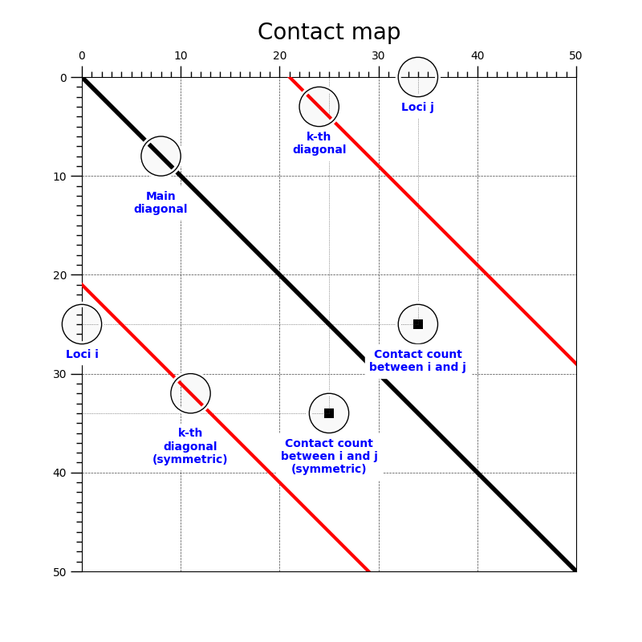

Note
Click here to download the full example code or to run this example in your browser via Binder
Understanding Hi-C contact maps¶
import matplotlib
import matplotlib.pyplot as plt
from matplotlib.ticker import MultipleLocator
from matplotlib.patches import Rectangle
fig, ax = plt.subplots(figsize=(8, 8), subplot_kw={"aspect": 1})
ax.set_xlim(0, 50)
ax.set_ylim(50, 0)
ax.plot([0, 50], [0, 50], linewidth=4, color="black", zorder=11)
ax.plot([0, 29], [21, 50], linewidth=3, color="r", zorder=11)
ax.plot([21, 50], [0, 29], linewidth=3, color="r", zorder=11)
ax.xaxis.set_major_locator(MultipleLocator(10))
ax.xaxis.set_minor_locator(MultipleLocator(1))
ax.yaxis.set_major_locator(MultipleLocator(10))
ax.yaxis.set_minor_locator(MultipleLocator(1))
ax.tick_params(which='major', width=1.0)
ax.tick_params(which='major', length=10)
ax.tick_params(which='minor', width=1.0, labelsize=10)
ax.tick_params(which='minor', length=5, labelsize=10, labelcolor='0.25')
ax.xaxis.tick_top()
ax.grid(linestyle="--", linewidth=0.5, color='.25', zorder=-10)
ax.set_title("Contact map",
fontsize=20, verticalalignment='bottom')
def circle(x, y, radius=2):
from matplotlib.patches import Circle
from matplotlib.patheffects import withStroke
circle = Circle((x, y), radius, clip_on=False, zorder=12, linewidth=1,
edgecolor='black', facecolor=(0, 0, 0, .0125),
path_effects=[withStroke(linewidth=5, foreground='w')])
ax.add_artist(circle)
def text(x, y, text, zorder=10):
ax.text(x, y, text, backgroundcolor="white",
ha='center', va='top', weight='bold', color='blue', zorder=zorder)
# k-th diagonal
circle(24, 3)
text(24, 5.5, "k-th\ndiagonal")
circle(11, 32)
text(11, 35.5, "k-th\ndiagonal\n(symmetric)")
circle(8, 8)
text(8, 11.5, "Main\ndiagonal")
rect = Rectangle((33.5, 24.5), 1, 1, facecolor="black", fill=True)
ax.add_artist(rect)
ax.plot([0, 34], [25, 25], linestyle=":", color=".25", lw=0.5)
ax.plot([34, 34], [0, 25], linestyle=":", color=".25", lw=0.5)
circle(34, 25)
text(34, 27.5, "Contact count\nbetween i and j", zorder=12)
rect = Rectangle((24.5, 33.5), 1, 1, facecolor="black", fill=True)
ax.add_artist(rect)
ax.plot([0, 25], [34, 34], linestyle=":", color=".25", lw=0.5)
ax.plot([25, 25], [0, 34], linestyle=":", color=".25", lw=0.5)
circle(25, 34)
text(25, 36.5, "Contact count\nbetween i and j\n(symmetric)", zorder=10)
circle(34, 0)
text(34, 2.5, "Loci j")
circle(0, 25)
text(0, 27.5, "Loci i")
fig.savefig("contact_map.png")
Total running time of the script: ( 0 minutes 0.548 seconds)